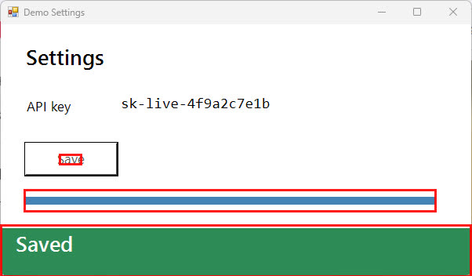

SCREENCAST-MCP / WORKFLOWS / REC 03
Agent UI verification loop
When an agent changes UI code, it should check the result the way a person would: look before, trigger the change, wait for the screen to stop moving, then see exactly what changed and read the text. No guessed sleep, and no burning a full-size image on every poll.
00:00THE PROMPT
Take a screenshot of Demo Settings, wait until the save finishes, and tell me what changed. Did it say Saved?
00:05THE CALLS IT MAKES
screenshot → wait_for_change → screen_diff → find_text. Paths are shortened; every value is from a real run.
- screenshot { "target": "window:Demo Settings" }The before image. Returned inline by default so the model sees it.{ "outputPath": "shot-a.png", "region": { "width": 602, "height": 352 } }
- wait_for_change { "target": "window:Demo Settings", "mode": "change", "timeoutSec": 10 }Returns as soon as anything on screen changes, with where it changed.{ "outcome": "changed", "elapsedSec": 0.87, "regions": [{ "x": 177, "y": 321, "width": 120, "height": 30 }] }
- wait_for_change { "target": "window:Demo Settings", "mode": "settle", "settleSec": 0.75, "timeoutSec": 10 }Then waits until the screen has been still for 0.75 s: the save has finished animating.{ "outcome": "settled", "elapsedSec": 2.56, "changedWhileWaiting": true }
- screenshot { "target": "window:Demo Settings" }The after image.{ "outputPath": "shot-b.png" }
- screen_diff { "a": "shot-a.png", "b": "shot-b.png" }SSIM plus boxes around each changed area, drawn on the after image.{ "identical": false, "ssim": 0.8214, "changedFraction": 0.2833, "regions": [ 3 boxes ] }
- find_text { "input": "shot-b.png", "query": "Saved" }Confirms the text, not just that pixels moved.{ "matchCount": 1, "matches": [{ "text": "Saved", "x": 21, "y": 301 }] }
00:30THE OUTPUT

Each box is a place the agent can look closer, with find_text or a cropped screenshot. screen_diff on two identical images returns identical: true, so the loop can also prove nothing changed.